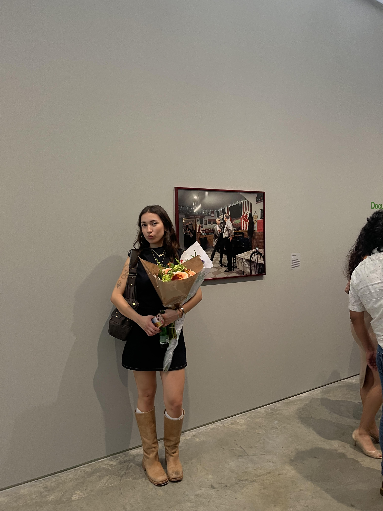

This is my portfolio site for the MEDP 150 Fall 2025 class.
Hi! My name is Mila and I am a Brooklyn-based photographer from San Francisco. While studying Human Biology at UC San Diego, I fell in love with working alongside creatives and seeing my name in print after I joined The UCSD Guardian’s photo team. I later left UCSD and moved to New York to attend the International Center of Photography, where I completed their year-long Documentary Practice and Visual Journalism in May of 2025.
At the ICP, I started a long-term project titled Members Only, which documents the Banatul Folklore and Soccer Club, a Romanian Bar and social hall located in Ridgewood, Queens since 1968. The project, shot entirely on 35mm and 120 film, is an act of preservation for authenticity and community in New York City, through the lens of the regular crowd. My work, both personal and commercial, is heavily influenced by photographers like Justine Kurland, Stephen Shore, and Martin Parr. I’m drawn to reportage photography with an editorial flare, mundane moments captured in a way that allows us to romanticize them.
Alongside my publications with The UCSD Guardian, my work has been featured in Quilt Magazine, Clocked Out Magazine, and The New York Times.